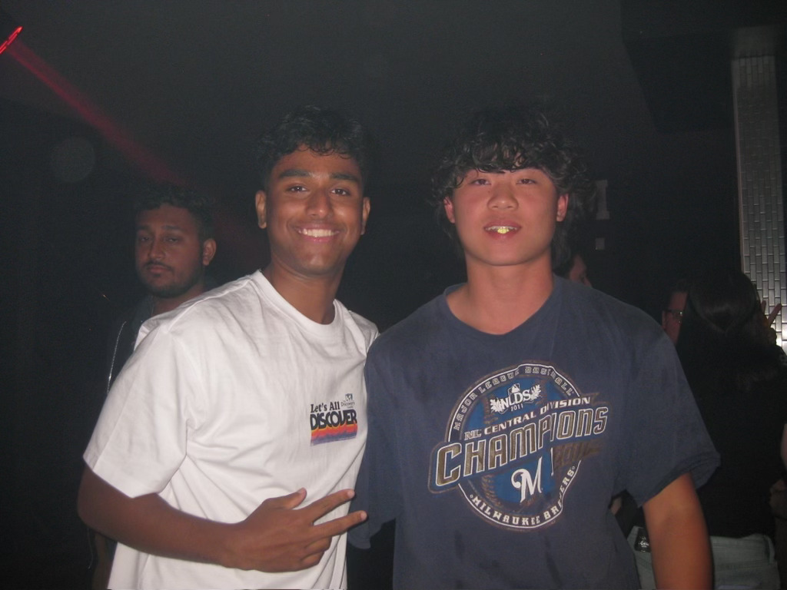

About Me
I'm a current junior undergraduate student at The Ohio State University, majoring in Computer Science and Engineering specializing in Artificial Intelligence, with a minor in Mathematics.
My interests lie in devoting myself to expanding my knowledge in the diverse world of technology, to further implement my skills and passion to learn, and involve myself in an industrious environment surrounding software engineering.
In my free time, I enjoy broadening my knowledge in programming languages, training for triathlons, going to the gym, listening to music, hanging out with my friends, photography, and playing sports.